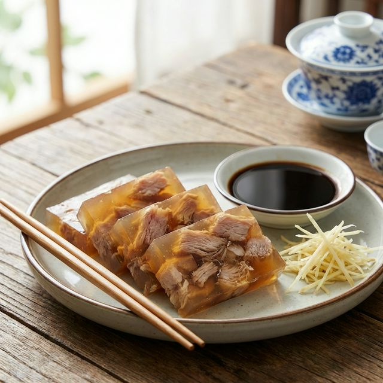

食材准备
- 主料： 猪前蹄 (或蹄膀) 2000g
- 盐渍： 精盐、硝盐 (工业需严格控制) 少许
- 香料袋： 八角、桂皮、香叶 适量
- 调味： 绍酒、生姜、大葱 适量
- 蘸料： 镇江香醋、姜丝 必备
烹饪步骤
腌制红肉
蹄膀修整整齐，用盐均匀擦拭鱼身。腌制至少24小时。这一步能让肉质紧实且颜色红润。
焯水洗净
腌好的肉洗去多余盐分。入沸水焯烫，撇去浮沫，再次洗净备用。
卤煮
锅中加入清水、料酒、葱姜和香料包。大火烧开后下入蹄膀，转小火慢煮约3小时，直至肉酥皮烂。
压实成型
将煮好的肉捞出，皮朝下整齐摆放在平盘或模具中。过滤卤汁浇在肉上。上面盖一个重物（如另一盆水）压实，放入冷处或冰箱冷藏定型。
切块享用
凝固后的肉呈半透明水晶状。切成长方块。吃时必须蘸镇江香醋和姜丝。咸鲜酥嫩，皮冻清爽。